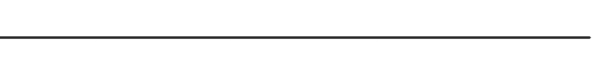
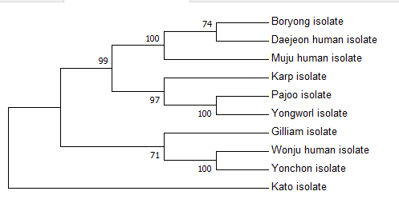

Construcción y análisis de árboles filogenéticos¶
4.1 Selección del método de construcción del árbol¶
El método de construcción empleado por los autores es el Neighbour-Joining ,con un boopstrap de 1000 réplicas y los parámetros anteriormente obtenidos en el cálculo de la distancia (TN93 + G).
Sin embargo, dado que las secuencias presentan una divergencia media-alta, se podría emplear también el método de Máxima Verosimilitud bajo un boopstrap de 1000 réplicas. De esta manera nos quedaríamos con el árbol que presenta una mayor probabilidad en base al modelo de sustitución escogido.
4.2 Árboles filogenéticos¶
Nota
A pesar de que en el alineamiento incluimos la secuencia de referencia, para la construcción del árbol no se ha considerado para lograr mayor similitud al proceso realizado por los autores del artículo. Se ha comprobado que eliminar la secuencia de referencia del alineamiento no tiene ningún efecto sobre el cálculo del mejor modelo de sustitución.
{kind=link}
{kind=link}
En nuestro árbol se ha empleado como outgroup la variante Kato mientras que el árbol obtenido en el artículo no es enrraizado.
 {kind=link}
Podemos ver que presenta similitud tanto con el árbol obtenido por NJ como con el de los autores,siendo la principal diferencia la que presenta en las probabilidades trás el boopstrap.
La realización del estudio filogenético nos va permitir deducir la procedencia de las variantes aisladas de humanos Muju,Daejeon y Wonju.
- En un principio, podemos deducir que la variedad Daejeon está más cercana genéticamente a la cepa Boroyong por lo que probablemente pertenezca a esta.
- La variedad Muju comparte clado con estas dos variedades, por lo que con probabildidad también se trata de una variante de la cepa Boroyong .
- Finalmente, la variedad Wonju se encuentra más cercana genéticamente a la cepa Yonchon tal y como indican los árboles filogenéticos anteriormente expuestos.
Vamos a comentar estos resultados con mayor profundidad en el siguiente apartado.